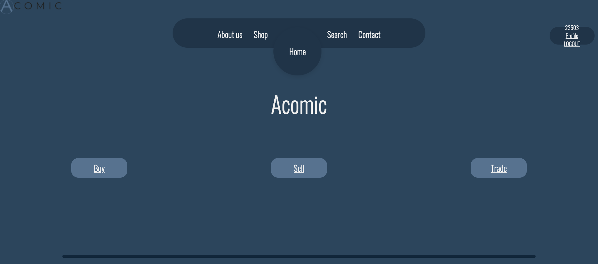
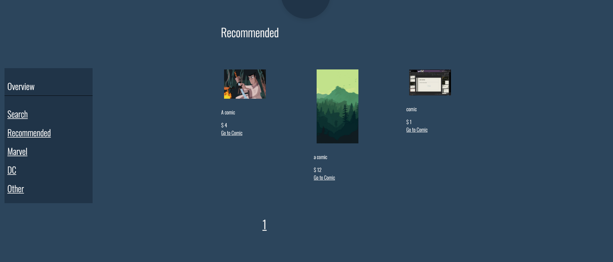
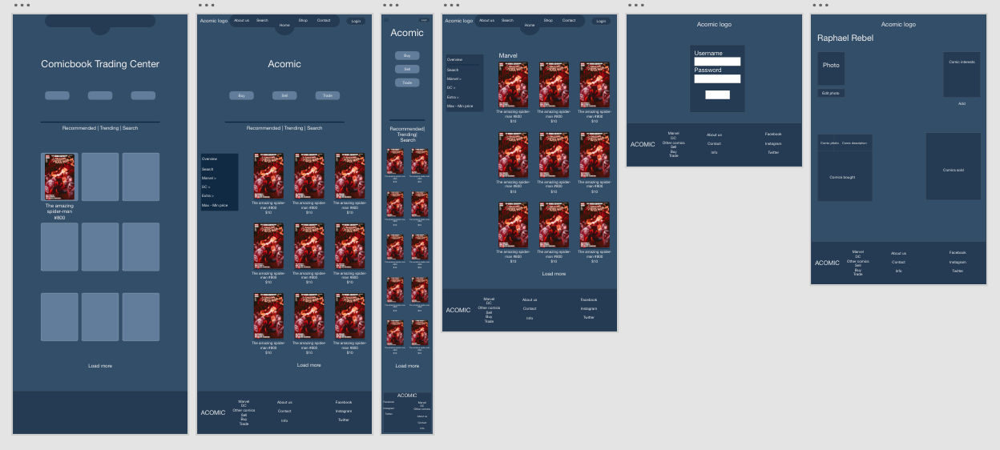
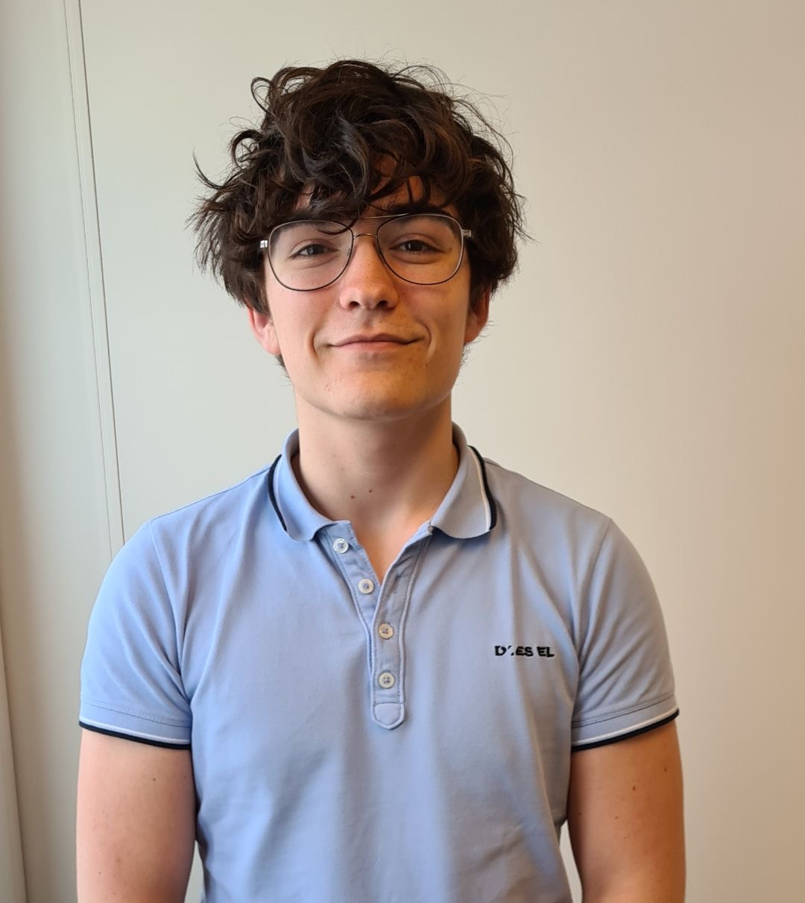

Acomic
 Klik hier om naar de website te gaan
Omschrijving
Dit is mijn project van de 4e en laatste semester van mijn 1e jaar. Het gaat over een handelscentrum voor stripboeken. Dit project zorgde ervoor dat ik bijna al mijn vaardigheden gebruikte die ik van de vorige websites heb geleerd. Daarnaast heb ik veel meer geleerd over PHP en mySQL.
Door dit project kan ik zien hoeveel vooruitgang ik het afgelopen jaar heb gemaakt. Ik heb bijna elk probleem dat ik ben tegengekomen opgelost. Daarom denk ik dat ik nu klaar ben om te proberen een baan als webontwikkelaar te krijgen.
Doelgroep
Dit is bedoelt voor alle comicbook fans. Maar als ik er een leeftijd op zou plaatsen zou ik 18-30 jaar zeggen
Wireframe
Team
Raphael Rebel
